library(tidyverse)
lc.gf <- read.csv("data/lcareas_gf2021.csv")
lc.hw <- read.csv("data/lcareas_hw2025.csv")
lc.iv <- read.csv("data/lcareas_iverson.csv")
flr.gf <- read.csv("data/florlc_gf2021.csv")
flr.hw <- read.csv("data/florlc_hw2025.csv")
lcflr.iv <- read.csv("data/flowerdens_iverson.csv")
key.iv <- read.csv("data-raw/Iversonetal/iverson_landcover_codes.csv")Project flowers
Hemberger & Williams 2025
Data is available as floral density for transects of different land cover types at the different sampling periods.
However, there are some duplicates of the period, site, land cover, and species combinations.
nrow(flr.hw)[1] 1699nrow(distinct(flr.hw, period, site, landcover, species))[1] 1618examine.dupes <- janitor::get_dupes(flr.hw, period, site, landcover, species)
head(examine.dupes) period site landcover species dupe_count date initials quad.width
1 APR TOM Riparian basa 3 4/23/03 NN 5
2 APR TOM Riparian basa 3 4/23/03 NN 5
3 APR TOM Riparian basa 3 4/23/03 NN 5
4 JUL TER 1 fallow coar 3 6/30/03 <NA> NA
5 JUL TER 1 fallow coar 3 6/30/03 <NA> NA
6 JUL TER 1 fallow coar 3 7/22/03 <NA> NA
quad.length flower.unit conversion.flwperinfl flowerdens plant.type
1 50 fl 1 0.21166667 n
2 50 fl 1 0.07166667 n
3 50 fl 1 0.03333333 n
4 <NA> <NA> NA 1.39130435 e
5 <NA> <NA> NA 0.55000000 e
6 <NA> <NA> NA 1.27272727 eSome of these look like samples taken within the same site and period, but actually on different dates. There are still some duplicates within the same date, site, period, land cover, and species (41), meaning species counts taken at the same site, land cover, and day, or the same species. The floral density estimates are different within these duplicates, which suggests these are different measurements, not accidental duplications.
nrow(distinct(flr.hw, period, date, site, landcover, species))[1] 1678examine.dupes2 <- janitor::get_dupes(flr.hw, date, period, site, landcover, species)
head(examine.dupes2) date period site landcover species dupe_count initials quad.width
1 4/23/03 APR TOM Riparian basa 3 NN 5
2 4/23/03 APR TOM Riparian basa 3 NN 5
3 4/23/03 APR TOM Riparian basa 3 NN 5
4 3/16/03 MAR GOO fallow Br cultivar 2 <NA> NA
5 3/16/03 MAR GOO fallow Br cultivar 2 <NA> NA
6 3/16/03 MAR GOO fallow sool 2 <NA> NA
quad.length flower.unit conversion.flwperinfl flowerdens plant.type
1 50 fl 1 0.21166667 n
2 50 fl 1 0.07166667 n
3 50 fl 1 0.03333333 n
4 <NA> <NA> NA 4.01760000 c
5 <NA> <NA> NA 17.85600000 c
6 <NA> <NA> NA 0.04000000 eLooking back into more base data, there aren’t columns that differentiate these duplicates, so I will average them.
hw.dir <- "data-raw/HembergerWilliams_2025"
snflwr.df <- read_csv(file.path(hw.dir,"data/floral_survey_sn.csv")) %>%
janitor::get_dupes(site, date, period, landcover, species, plant.type)
cropflwr.df <- read_csv(file.path(hw.dir,"data/floral_survey_conv.csv")) %>% rename(landcover = field.type) %>%
janitor::get_dupes(site, date, period, landcover, species, plant.type)
orgflwr.df <- read_csv(file.path(hw.dir,"data/floral_survey_org.csv")) %>% rename(landcover = field.type) %>%
janitor::get_dupes(site, date, period, landcover, species, plant.type)
# the dataset I have doesn't filter by Bombus sp.
bombus.flwr.df <- read_csv(file.path(hw.dir,"data/neal_data-confirmation/floral_bombus_visited.csv")) %>%
filter(bombus_collected == "yes")
floral.df <- snflwr.df %>%
bind_rows(orgflwr.df) %>%
bind_rows(cropflwr.df) #%>%
#filter(species %in% bombus.flwr.df$code)Get total flower density by date and land cover type
Steps:
Average duplicated species estimates within the same date (period), site, landcover
Sum floral densities across the same site, date, and landcover
Alternative: just do step 2.
It also looks like some “periods” include multiple sampling dates. I will average those too.
** Looking back at the original manuscript for this data (Williams et al. 2012), the data were collected every three weeks, which is why the periods aren’t monthly.
lcflr.hw0 <- flr.hw |> group_by(date, period, site, landcover, species) |>
summarize(flowerdens = mean(flowerdens, na.rm = TRUE), .groups = "drop") |>
group_by(date, period, site, landcover) |>
summarize(flowerdens = sum(flowerdens, na.rm = TRUE), .groups = "drop")
DT::datatable(lcflr.hw0 |> group_by(site, landcover) |>
summarize(periods = length(unique(period)), dates = length(unique(date)),.groups = "drop")
)# average total flower density when taken there are two sampling dates in one period
lcflr.hw <- lcflr.hw0 |> group_by(period, site, landcover) |>
summarize(flowerdens = mean(flowerdens), .groups = "drop")Connect total flower densities to land cover classes
There are redundant codes in the landcover classes of lcflr.hw. Use the raster key to consolidate them into landcover classes only found in the landcover raster.
lckey.hw <- read.csv("data/spatial/hw2025_lc_key.csv")
rastlcflr.hw <- lcflr.hw |>
left_join(lckey.hw |>
distinct(landcover.floral, raster.name, raster.code.floral, landcover.4cat, raster.code.4cat),
by = c("landcover" = "landcover.floral")) |>
filter(!is.na(raster.name) & period != ".") |>
group_by(period, raster.name, raster.code.floral, landcover.4cat, raster.code.4cat) |>
summarize(flowerdens = mean(flowerdens),
flowerdens.sd = sd(flowerdens), .groups = "drop") |>
select(period, raster.name, flowerdens) |>
complete(period,raster.name, fill = list(flowerdens=0)) |>
mutate(period = factor(period, levels = c("MAR","APR","MAY","JUN","JUL","AUG"))) |>
left_join(lckey.hw |> filter(!is.na(raster.code) & landcover.4cat != "na") |>
distinct(raster.name, .keep_all = TRUE),
by = "raster.name") |>
mutate(month = recode_values(period, "MAR"~ 3,"APR"~ 4, "MAY"~5, "JUN" ~ 6, "JUL"~7))
write.csv(rastlcflr.hw, "data/flowerdens_hw2025.csv", row.names = FALSE)
ggplot(rastlcflr.hw,
aes(month, flowerdens, color = raster.name)) + geom_point() + geom_line()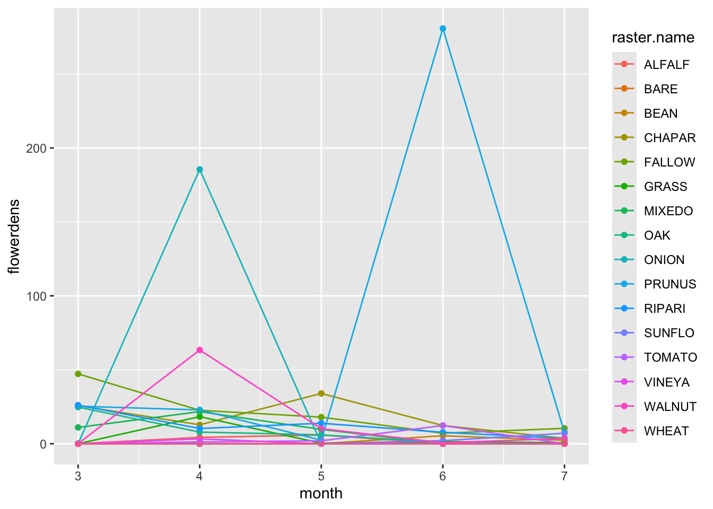
rastkey.hw <- lckey.hw |> filter(!is.na(raster.code) & landcover.4cat != "na") |>
distinct(raster.name, .keep_all = TRUE)
buf.hw <- lc.hw |> filter(buffer == 750)
cropbuf.hw <- buf.hw |>
pivot_longer(cols = CROPLA:RICE, names_to = "raster.name", values_to = "area") |>
left_join(rastlcflr.hw, by = "raster.name", relationship = "many-to-many") |>
filter(!is.na(period) & !is.na(area)) |>
mutate(total.flowers = area*flowerdens)
croparea.hw <- cropbuf.hw |>
group_by(period, month, SITE, landcover.4cat) |>
summarize(area = sum(area), total.flowers = sum(total.flowers), .groups = "drop") |>
pivot_wider(id_cols = c(period, month, SITE),
names_from = landcover.4cat, values_from = c(area, total.flowers)) |>
mutate(
total.flowers = total.flowers_crop + total.flowers_natural,
total.area = area_crop + area_natural,
pct.natural = 100*area_natural/(750*750*pi),
pct.nat.intv = cut_width(pct.natural, width = 25, boundary = 0)
)
ggplot(croparea.hw, aes(month, total.flowers, group = SITE, color = pct.natural)) +
geom_point() + geom_line() + scale_color_viridis_c(option = "viridis") + facet_wrap(~pct.nat.intv)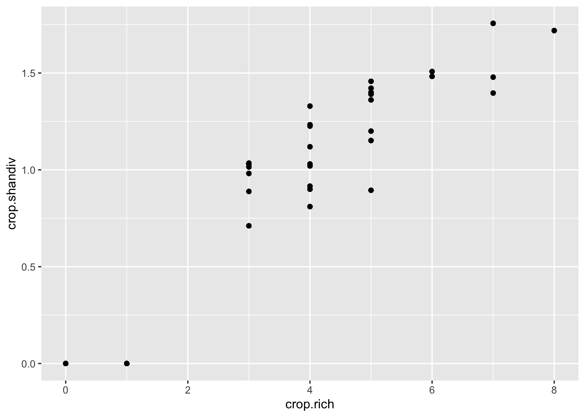
Crop richness
croprich.hw <- cropbuf.hw |> rowwise() |>
mutate(crop = landcover.4cat=="crop" & area > 0) |>
group_by(period, month, SITE) |>
summarize(area = sum(area), total.flowers = sum(total.flowers), crop.rich = sum(crop),
.groups = "drop")
croparearich.hw <- croparea.hw |> select(month, period, SITE, pct.natural, total.flowers) |>
left_join(croprich.hw |> select(month, period, SITE, crop.rich), by = c("month", "period", "SITE"))
ggplot(croparearich.hw, aes(month, total.flowers, group = SITE, color = pct.natural)) +
geom_point() + geom_line() + facet_wrap(~crop.rich) + scale_color_viridis_c(option = "viridis")
Crop diversity
cropdiv.hw <- croparea.hw |> select(SITE, area_crop) |> distinct() |>
right_join(cropbuf.hw, by = "SITE") |> filter(landcover.4cat == "crop") |>
mutate(P_i = area/area_crop, P_i2 = P_i * log(P_i)) |>
group_by(period, month, SITE) |>
summarize(crop.shandiv = - sum(P_i2, na.rm = TRUE), .groups = "drop") |>
right_join(croprich.hw, by = c("period", "month", "SITE"))
ggplot(cropdiv.hw, aes(month, total.flowers, group = SITE, color = crop.shandiv)) +
geom_point() + geom_line() + facet_wrap(~crop.rich) + scale_color_viridis_c(option = "viridis")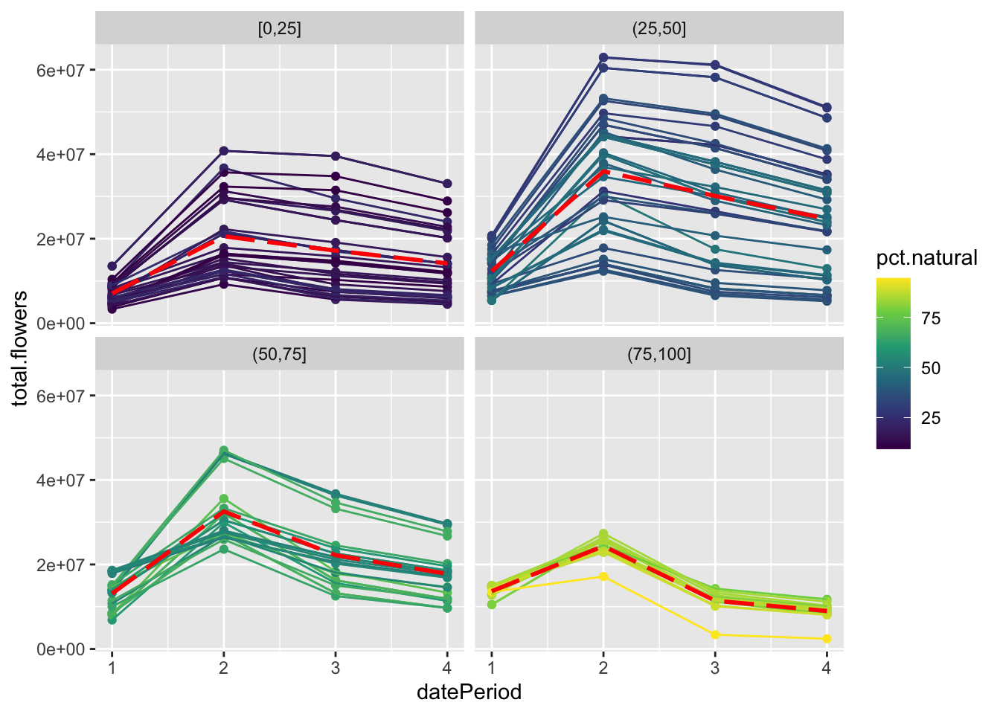
crop richness vs % natural correlation
ggplot(croparearich.hw, aes(crop.rich, pct.natural)) + geom_point()
crop richness vs % natural correlation
ggplot(cropdiv.hw, aes(crop.rich, crop.shandiv)) + geom_point()
Guezen and Forrest 2021
Data is available for flower density within quadrats. Each row is a separate species count, maybe for same quadrat. Quadrats are organized within transects of land cover types. Multiple transects fall within the same site. There aren’t transects for each land cover type at every single datepoint because: “If sampling locations contained open flowers during more than one sampling period, the same location was sampled in multiple time periods” (pg 3133).
Duplicates - some species are reported twice within the same transect and quadrat. In some cases, it’s with the same density, in others, they are different.
nrow(flr.gf)[1] 944nrow(distinct(flr.gf))[1] 929examine.dupes.gf <- janitor::get_dupes(flr.gf, -count_per_m2)
head(examine.dupes.gf, 7) datePeriod date site landtype transect quadrat
1 2 2016-07-04 17 sunflower 17.6 2
2 2 2016-07-04 17 sunflower 17.6 2
3 2 2016-07-04 17 sunflower 17.6 2
4 2 2016-06-24 22 squash 22.5 1
5 2 2016-06-24 22 squash 22.5 1
6 2 2016-06-24 22 squash 22.5 2
7 2 2016-06-24 22 squash 22.5 2
flower dupe_count count_per_m2
1 Helianthus annuus 3 0.3555556
2 Helianthus annuus 3 1.2444444
3 Helianthus annuus 3 1.2444444
4 Cucurbita pepo (male/zucchini) 2 0.7207207
5 Cucurbita pepo (male/zucchini) 2 0.7207207
6 Cucurbita pepo (zucchini) 2 0.1801802
7 Cucurbita pepo (zucchini) 2 0.0000000Like Hemberger & Williams 2025, I’ll average same species within a quadrat.
lcflr.gf0 <- flr.gf |> group_by(date, datePeriod, site, landtype, transect, quadrat, flower) |>
summarize(count_per_m2 = mean(count_per_m2, na.rm = TRUE), # takes average over same species in same quadrat
.groups = "drop") |>
group_by(date, datePeriod, site, landtype, transect, quadrat) |>
summarize(count_per_m2 = sum(count_per_m2, na.rm = TRUE), # total flower count (density) per quadrat
.groups = "drop") |>
group_by(date, datePeriod, site, landtype, transect) |>
summarize(count_mn = mean(count_per_m2), # mean quadrat floral density
count_sd = sd(count_per_m2), # sd of floral counts in transect
count_n = n(),
.groups = "drop")
DT::datatable(lcflr.gf0 |> group_by(site, landtype) |>
summarize(periods = length(unique(datePeriod)),
dates = length(unique(date)),
transects = length(unique(transect)),
.groups = "drop")
)lcflr.gf <- lcflr.gf0 |> group_by(datePeriod, landtype) |>
summarize(flowerdens = mean(count_mn),
.groups = "drop") |>
complete(datePeriod, landtype, fill = list(flowerdens = 0)) |>
mutate(crop = ifelse(landtype %in% c("forest", "semi-natural"), "natural", "crop"))
write.csv(lcflr.gf, "data/flowerdens_gf2021.csv", row.names = FALSE)
ggplot(lcflr.gf,
aes(datePeriod, flowerdens, color = landtype)) + geom_point() + geom_line()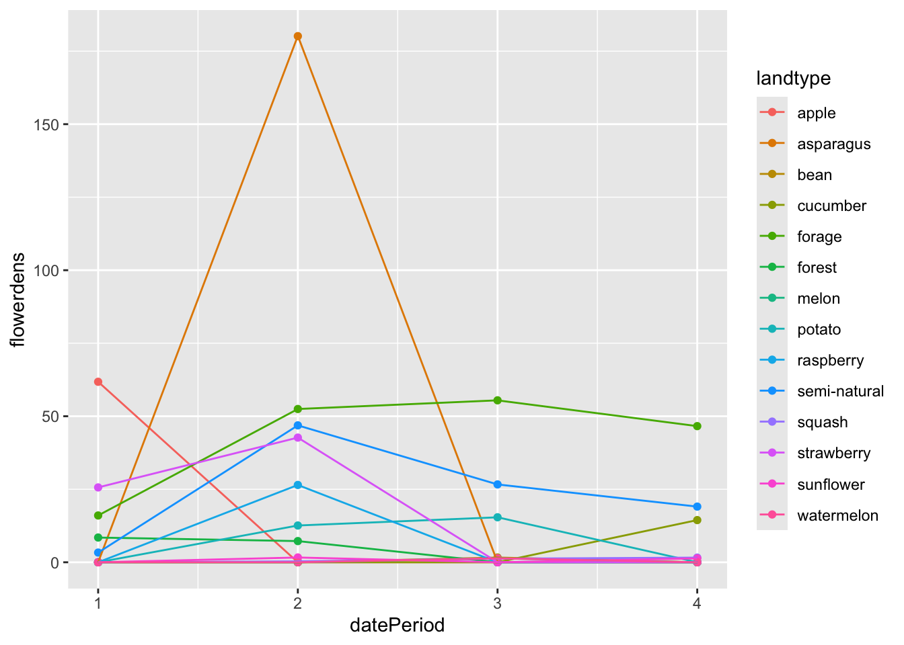
compare landscape buffers
buf.gf <- lc.gf |> filter(buffer == 750)
cropbuf.gf <- buf.gf |>
pivot_longer(cols = Blackberry:Canola, names_to = "landtype", values_to = "area") |>
mutate(landtype = gsub("\\.","-", tolower(landtype))) |>
left_join(lcflr.gf, by = "landtype", relationship = "many-to-many") |>
filter(!is.na(datePeriod) & !is.na(area)) |>
mutate(total.flowers = area*flowerdens)
croparea.gf <- cropbuf.gf |>
group_by(datePeriod, transect, crop) |>
summarize(area = sum(area), total.flowers = sum(total.flowers), .groups = "drop") |>
pivot_wider(id_cols = c(datePeriod, transect),
names_from = crop, values_from = c(area, total.flowers)) |>
mutate(
total.flowers = total.flowers_crop + total.flowers_natural,
total.area = area_crop + area_natural,
pct.natural = 100*area_natural/(750*750*pi),
pct.nat.intv = cut_width(pct.natural, width = 25, boundary = 0)
)
ggplot(croparea.gf, aes(datePeriod, total.flowers, group = transect, color = pct.natural)) +
geom_point() + geom_line() + scale_color_viridis_c(option = "viridis") + facet_wrap(~pct.nat.intv)
Crop richness
croprich.gf <- cropbuf.gf |> rowwise() |>
mutate(crop = crop=="crop" & area > 0) |>
group_by(datePeriod, transect) |>
summarize(area = sum(area), total.flowers = sum(total.flowers), crop.rich = sum(crop),
.groups = "drop")
croparearich.gf <- croparea.gf |> select(datePeriod, transect, pct.natural, total.flowers) |>
left_join(croprich.gf |> select(datePeriod, transect, crop.rich), by = c("datePeriod", "transect"))
ggplot(croparearich.gf, aes(datePeriod, total.flowers, group = transect, color = pct.natural)) +
geom_point() + geom_line() + facet_wrap(~crop.rich) + scale_color_viridis_c(option = "viridis")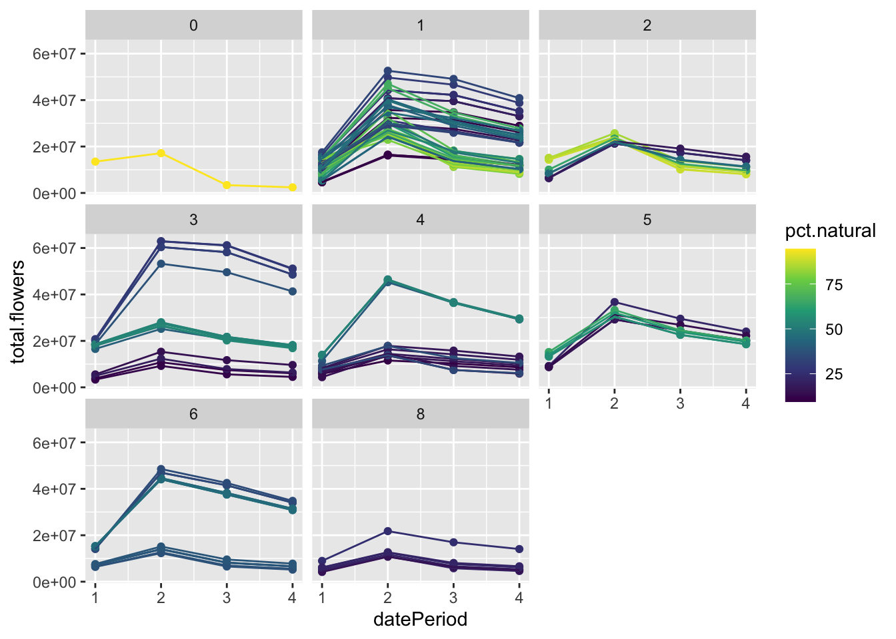
Crop diversity
cropdiv.gf <- croparea.gf |> select(transect, area_crop) |> distinct() |>
right_join(cropbuf.gf, by = "transect") |> filter(crop == "crop") |>
mutate(P_i = area/area_crop, P_i2 = P_i * log(P_i)) |>
group_by(datePeriod, transect) |>
summarize(crop.shandiv = - sum(P_i2, na.rm = TRUE), .groups = "drop") |>
right_join(croprich.gf, by = c("datePeriod", "transect"))
ggplot(cropdiv.gf, aes(datePeriod, total.flowers, group = transect, color = crop.shandiv)) +
geom_point() + geom_line() + facet_wrap(~crop.rich) + scale_color_viridis_c(option = "viridis")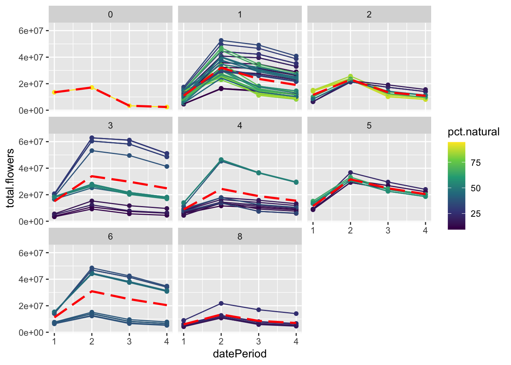
crop richness vs % natural correlation
Guezen & Forrest points are transects clustered by sites. At 750 m, some buffers are overlapping, some are not.
ggplot(croparearich.gf |>
separate_wider_delim(transect, delim = ".", names = c("site"), too_many = "drop", cols_remove = FALSE),
aes(crop.rich, pct.natural, color = site)) + geom_point()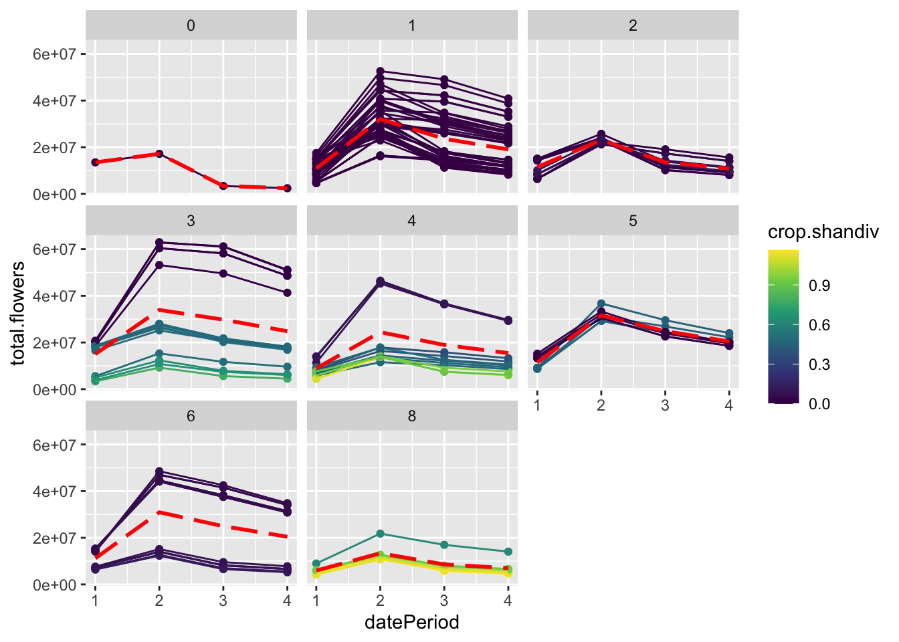
crop richness vs crop shannon diversity
Guezen & Forrest points are transects clustered by sites. At 750 m, some buffers are overlapping, some are not.
ggplot(cropdiv.gf |>
separate_wider_delim(transect, delim = ".", names = c("site"), too_many = "drop", cols_remove = FALSE),
aes(crop.rich, crop.shandiv, color = site)) + geom_point()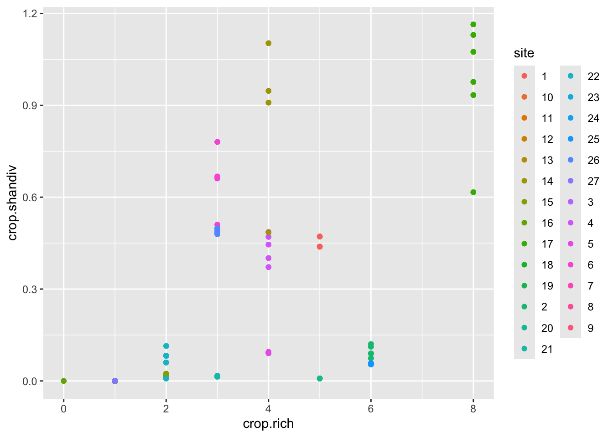
Iverson data
Aaron took surveys of all vegetation within a larger area using a modified Whitaker plot. Herbaceous plants were measured by coverage and trees were counted. Flowers were not counted during the survey but instead counted at peak flowering density independently of the site. The average peak flower density (or per-individual count for trees) was used to define the flowering curve that was calculated for the site over the entire year. Aaron’s workflow calculates total flower area per ha using floral dimensions from literature or field measurements, but I stop at flower counts to match the other studies.
compare landscape buffers
buf.iv <- lc.iv |> filter(buffer == "buf750")
cropbuf.iv <- buf.iv |>
pivot_longer(cols = Alfalfa:Plums,
names_to = "Floral_resources_landcover",
values_to = "area") |>
mutate(Floral_resources_landcover =
replace_values(Floral_resources_landcover,
"Urban.tree" ~ "Urban tree")) |>
left_join(lcflr.iv, by = "Floral_resources_landcover") |>
filter(!is.na(area)) |>
pivot_longer(d1:d365, names_to = "julianDay", values_to = "flowers_m2") |>
mutate(
total.flowers = area * flowers_m2,
julianDay = as.numeric(gsub("d","",julianDay))
)
croparea.iv <- cropbuf.iv |>
group_by(site, Group, julianDay) |>
summarize(area = sum(area), total.flowers = sum(total.flowers), .groups = "drop") |>
pivot_wider(id_cols = c(julianDay, site),
names_from = Group, values_from = c(area, total.flowers)) |>
mutate(
total.flowers = rowSums(across(total.flowers_Agriculture:total.flowers_Wetland)),
total.area = rowSums(across(area_Agriculture:area_Wetland)),
area_natural = area_Forest + area_Wetland + area_Succesional,
pct.natural = 100*area_natural/(750*750*pi),
pct.nat.intv = cut_width(pct.natural, width = 25, boundary = 0)
)
croparea.iv.sum <- croparea.iv |> select(site, pct.natural, pct.nat.intv) |> distinct()
ggplot(croparea.iv, aes(julianDay, total.flowers, group = site, color = pct.natural)) +
geom_line() + scale_color_viridis_c(option = "viridis") + facet_wrap(~pct.nat.intv)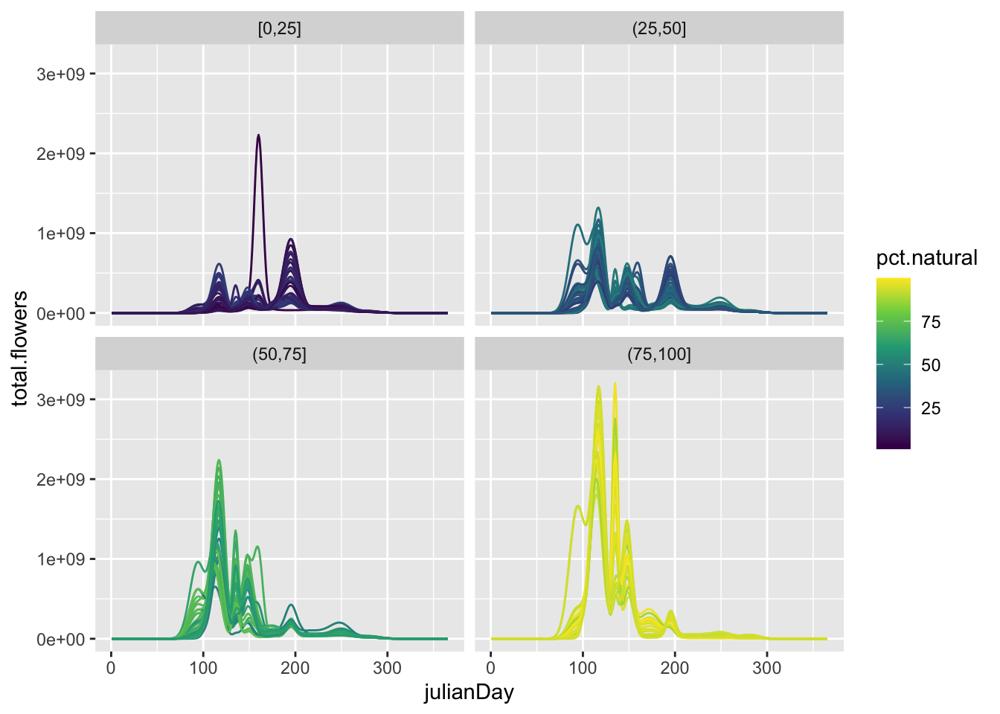
Crop richness
croprich.iv <- cropbuf.iv |> rowwise() |>
mutate(crop = Group=="Agriculture" & area > 0) |>
group_by(julianDay, site) |>
summarize(area = sum(area), total.flowers = sum(total.flowers), crop.rich = sum(crop), .groups = "drop")
croparearich.iv <- croparea.iv |> select(julianDay, site, pct.natural, total.flowers) |>
left_join(croprich.iv |> select(julianDay, site, crop.rich), by = c("julianDay", "site"))
ggplot(croparearich.iv, aes(julianDay, total.flowers, group = site, color = pct.natural)) + geom_line() + facet_wrap(~crop.rich) + scale_color_viridis_c(option = "viridis")
Crop diversity
cropdiv.iv <- croparea.iv |> select(site, area_Agriculture) |> distinct() |>
right_join(cropbuf.iv, by = "site") |> filter(Group == "Agriculture") |>
mutate(P_i = area/area_Agriculture, P_i2 = P_i * log(P_i)) |>
group_by(julianDay, site) |>
summarize(crop.shandiv = - sum(P_i2, na.rm = TRUE), .groups = "drop") |>
right_join(croparearich.iv, by = c("julianDay", "site"))
ggplot(cropdiv.iv, aes(julianDay, total.flowers, group = site, color = crop.shandiv)) +
geom_line() + facet_wrap(~crop.rich) + scale_color_viridis_c(option = "viridis")
crop richness vs % natural correlation
Iverson points are sites clustered by farm. At 750 m, some buffers are overlapping.
Color + shape combinations represent shared farms in these plots.
cropdiv.iv.sum <- cropdiv.iv |> select(site, pct.natural, crop.rich, crop.shandiv) |>
distinct() |>
separate_wider_delim(site, delim = " ", names = c("farmsite", "farm"),
too_many = "merge", cols_remove = FALSE)
# Source - https://stackoverflow.com/q/76810554
# Posted by Lucile Mo', modified by community. See post 'Timeline' for change history
# Retrieved 2026-09-09, License - CC BY-SA 4.0
shapes <- c(0,2, 4, 7, 10, 15, 17, 18)
col_vibrant <- c("#0077BB","#33BBEE","#009988","#EE7733","#CC3311","#EE3377", "#BBBBBB")
ggplot(cropdiv.iv.sum, aes(crop.rich, pct.natural, color = farm, pch = farm)) + geom_point() +
scale_colour_manual(values = sample(col_vibrant, 81, replace = TRUE)) +
scale_shape_manual(values = sample(shapes, 81, replace = TRUE)) +
theme(legend.position = "none")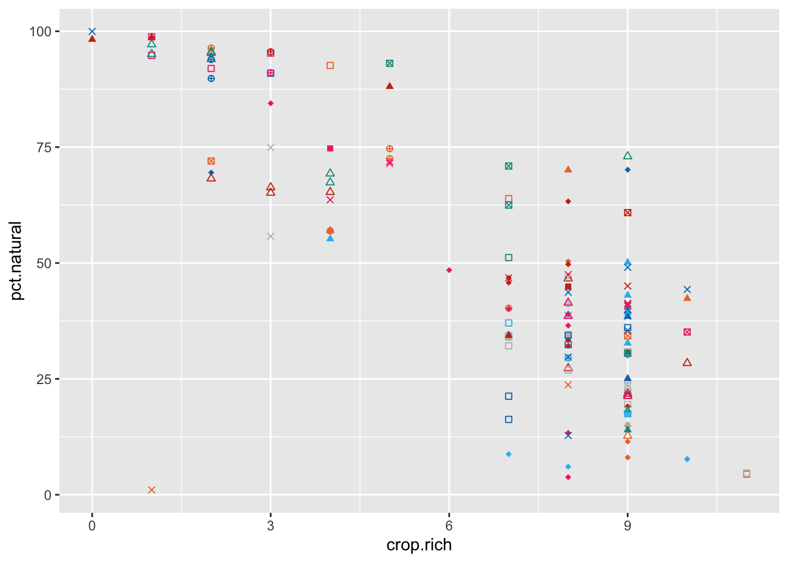
crop richness vs crop shannon diversity
ggplot(cropdiv.iv.sum, aes(crop.rich, crop.shandiv, color = farm, pch = farm)) + geom_point() +
scale_colour_manual(values = sample(col_vibrant, 81, replace = TRUE)) +
scale_shape_manual(values = sample(shapes, 81, replace = TRUE)) +
theme(legend.position = "none")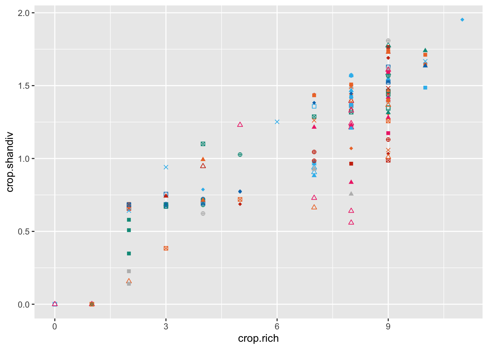